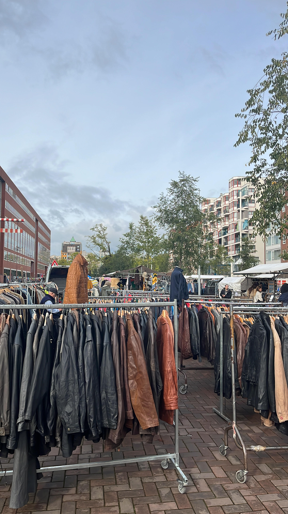
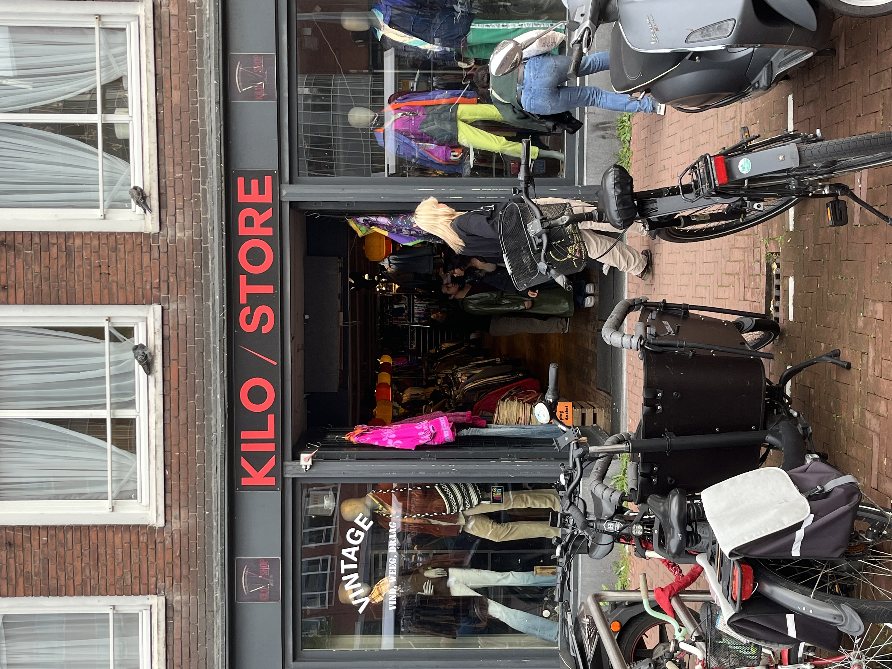

Ons initiatief heeft alles te maken met het aantrekkelijk maken van vintage kleding kopen. Dit initiatief gaat in tegen vervuiling en onmenselijke arbeidssituaties. Hoe meer mensen tweedehands kopen, hoe minder kleding er wordt geproduceerd! 
 Fast fashion bedrijven zoals Shein en Zara willen zo snel mogelijk een nieuwe kledingtrend in de winkel hebben hangen, en hier moet het milieu onder lijden.
Door tweedehands kleding te kopen help je het mileu dus een handje! Er zijn meer dan genoeg superleuke en unieke
kledingstukken te vinden voor een nog leuker prijsje!